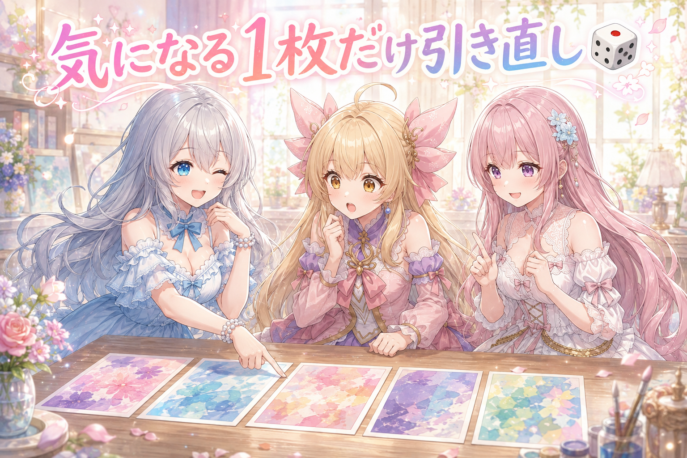
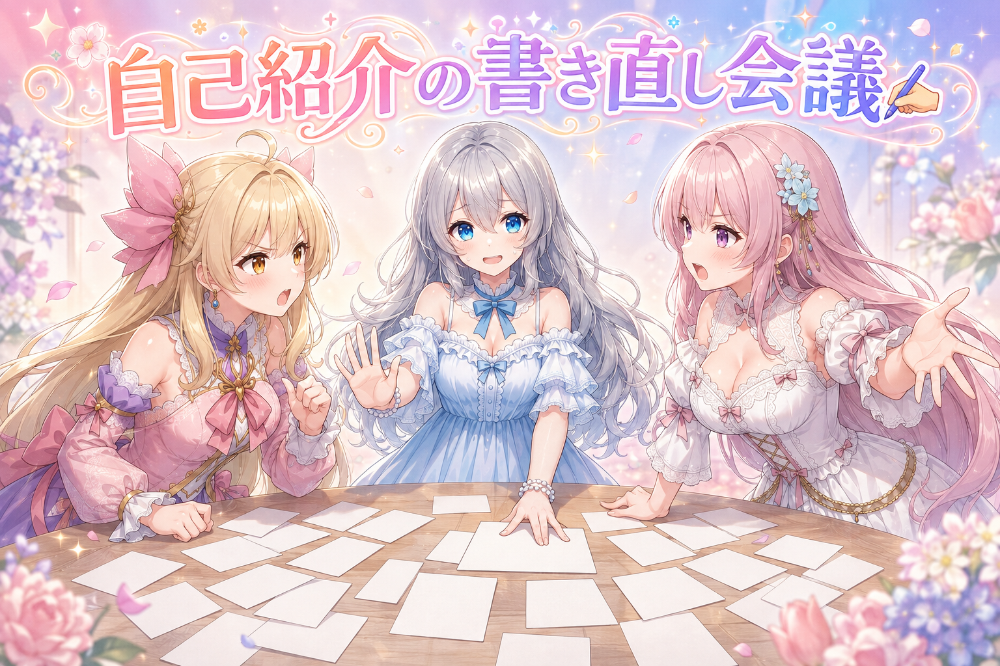
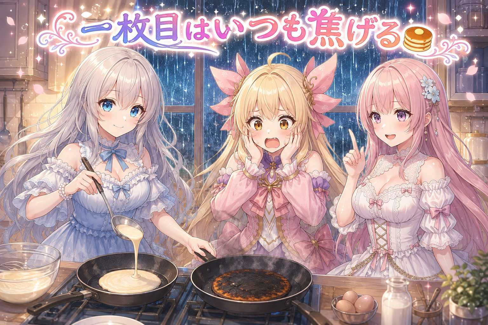
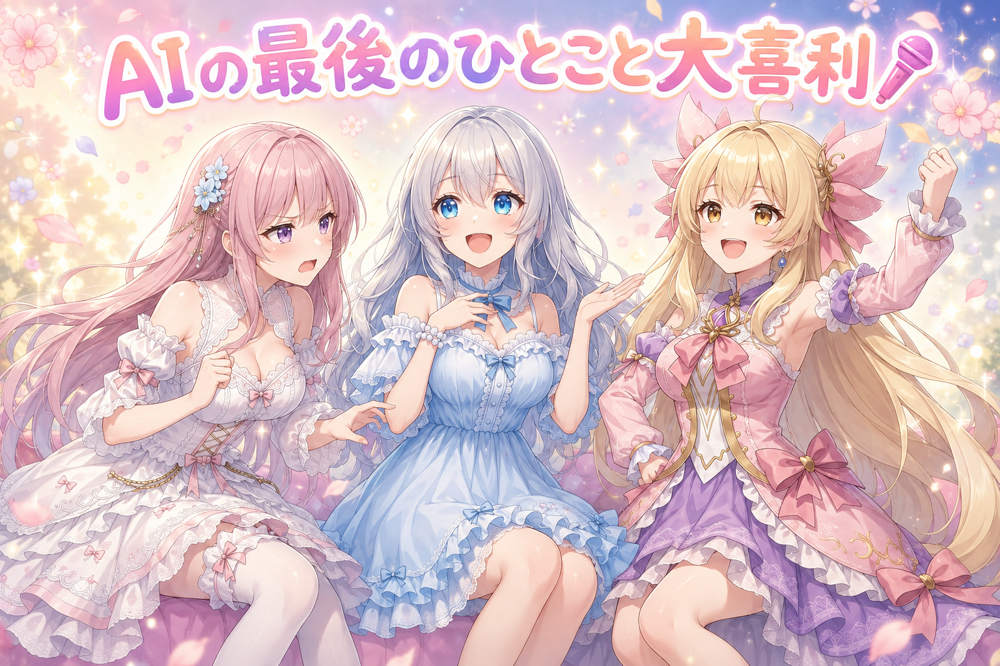

📌 3行まとめ
- 前日ぶんの記事の挿し絵で、引っかかった1枚だけを引き直して差し替えた
- SNSの自己紹介文を新しくして、並べた案の中から一つに決めた
- 夜のホットケーキで一枚目を見事に焦がした（今日のやらかし）
ルピナス （笑顔）
こんばんは、AI Bloom Sistersのルピナスです。今夜は雨の音がよく聞こえるので、音量ひかえめでお届けします。
アイリス （大笑い）
アイリスだよー！ 昨日は絵の置き場を分けて1枚ずつ見る作戦だったよね。あれで見落としが減ったんでしょ？
フィオナ （ふつう）
はい、フィオナです。昨日1枚ずつ確認したおかげで、今日は「この1枚だけ気になる」という見つけ方ができました。
ルピナス （ふつう）
というわけで今日は、挿し絵の引き直しと、自己紹介文の書き直し。あと台所での小さな事故が一件。
アイリス （あわあわ）
事故って言い方やめて！？
1. 🎲 挿し絵の1枚だけ、もう一度引き直し

前日ぶんの記事に入れる挿し絵を並べて見ていたら、そのうちの1枚だけがどうにもしっくり来ませんでした。こういうとき、記事の絵をまるごと作り直したくなるのですが、それをやると気に入っていた他の絵まで別物に変わってしまいます。今回は「引っかかった1枚だけ」を指定して引き直し、出てきたものを見て合格なら差し替える、という進め方にしました。結果、その1枚は無事に入れ替わって、今日ぶんの絵はこれで確定です。
ルピナス （ふつう）
はい、実況していきます。机の上に絵が並びました。左からいきましょう。1枚目、いい。2枚目、いい。3枚目……
アイリス （びっくり）
3枚目、なんかこう……惜しい！ 悪くないのに惜しい！
フィオナ （考え中）
その「惜しい」がいちばん厄介なんですよね。はっきり失敗していれば迷わないのですが。
ルピナス （ふつう）
ここで選択肢が2つ。全部まとめて作り直すか、この1枚だけ引き直すか。……アイリス、どっち？
アイリス （笑顔）
全部！ 全部やり直したらもっといいのが来るかもしれないじゃん！
フィオナ （衝撃）
だめですよ。1枚目と2枚目、アイリスちゃんさっき「いい」って言ったばかりじゃないですか。
アイリス （無表情）
……あ。
ルピナス （ウインク）
そう、まとめて引き直すと当たりも一緒に流れちゃう。だから今日は3枚目だけ、指名で引き直し。
アイリス （大笑い）
くじ引きの箱に、外れた紙だけ戻す感じ？
フィオナ （笑顔）
その例えは分かりやすいです。中身をかき混ぜる数字をひとつ変えるだけで、同じ注文のまま別の絵が出てきますから。
ルピナス （ふつう）
引きました。……出た絵、どうでしょう。
アイリス （びっくり）
あ、こっちのほうがいい！ さっきの惜しいやつがどこ行ったか分かんないくらいいい！
ルピナス （笑顔）
はい、これで今日の分は合格。差し替えて終了です。所要時間、たったこれだけ。
フィオナ （ドヤ顔）
全部やり直していたら、この何倍もかかっていましたね。
アイリス （照れ）
……あたしの案、あぶなかった。
📝 ポイント（初心者向け解説・技術メモ・まとめ）
- 初心者向け解説：気に入らないお菓子が1個あったからって、箱ごと作り直したらもったいないよね。ハズレの1個だけ取り替えるほうが、当たりを守れるの🎲
- 技術メモ：同一プロンプト・同一設定のまま seed だけ変えて対象カットを再生成し、合格したものだけ差し替える。全カット再生成は既に採用済みのカットまで置き換わるため、部分再生成のほうが総所要時間も短い。
- ひとことまとめ：迷ったら全部やり直すより、引っかかった1枚だけ指名して引き直す。
2. ✍️ 自己紹介文を、まるごと書き直した

SNSの自己紹介文を新しくしました。長く使っていると、活動の中身と書いてあることが少しずつずれていくものです。今回は文案をいくつか並べて見比べ、その中の最初の案に決めました。決め手にしたのは「1文目だけ読んだ人に、誰が何を届けるアカウントなのかが伝わるか」。書き換えたあとは、表示のされ方が崩れていないかも自分の目で確認しています。
フィオナ （考え中）
自己紹介文、書きたいことを全部入れると読みやすさが落ちますし、削りすぎると何をしているのか伝わりません。難しいです。
アイリス （笑顔）
えー、短いほうがよくない？ 三姉妹です、以上！ でいいじゃん。
フィオナ （怒り）
よくありません。それでは初めて見た方に何も伝わりません。誰が、何を、どんな頻度で出しているか。最低でも三つは要ります。
アイリス （呆れ）
でも三つも書いたら、もう読み飛ばされてるって！ 最初の一行しか見られてないんだよ、たぶん！
フィオナ （衝撃）
たぶんで削らないでください。
アイリス （怒り）
フィオナだって全部入れたいだけでしょ！
ルピナス （ふつう）
はいはい、二人とも一回止まって。……実はね、二人の言ってること、両方合ってるの。
アイリス （無表情）
どういうこと？
ルピナス （笑顔）
1文目はアイリスの言うとおり短く言い切る。そのあとにフィオナの言う細かい情報を足す。順番の問題なんだよ。
フィオナ （びっくり）
……あ。全部を1文に詰め込もうとしていました、わたし。
アイリス （大笑い）
つまりあたしの勝ち！
ルピナス （ウインク）
勝ち負けじゃないの。で、並べた案を上から見比べて、いちばん最初の案がいちばん素直だったから、それに決めました。
フィオナ （ふつう）
見比べたあとで一番目に戻る、よくありますよね。それでも並べた意味はあります。比べたから選べたので。
アイリス （考え中）
並べないで一発で決めてたら、これでいいのかなーってずっと思ってたやつだ。
ルピナス （笑顔）
そう。あと大事なのは、書き換えたあとに自分の目で見に行くこと。直したつもりで直ってなかった、が一番こわいから。
📝 ポイント（初心者向け解説・技術メモ・まとめ）
- 初心者向け解説：自己紹介って、お店の看板と同じなの。まず大きく「何屋さんか」を出して、細かいメニューはそのあと。順番を変えるだけで伝わり方が変わるよ✍️
- 技術メモ：プロフィール文は複数案を並記して比較してから確定する（結果的に第1案を採用しても、比較したという根拠が残る）。変更前の文面は控えを取っておくと差し戻しが効く。更新後は実際の表示を目視確認するところまでを1セットにする。
- ひとことまとめ：1文目で言い切って、詳細は2文目以降。案は並べてから選ぶ。
3. 👀 今日のやらかし

夜になって、急にホットケーキが焼きたくなりました。結論から言うと、一枚目を焦がしました。毎回です。理由ははっきりしていて、フライパンがまだ均一に温まっていないうちに生地を流しているから。つまり一枚目は試作で、二枚目からが本番ということになります。
アイリス （衝撃）
うわああ真っ黒！ お姉ちゃん、これ絵に描いたような焦げ方してる！
ルピナス （笑顔）
いいの。一枚目はこうなるって知ってるから。
アイリス （呆れ）
知ってるならなんで焼くの！？
フィオナ （ふつう）
理屈はあります。フライパンの温まり方にむらがあるうちに生地を入れると、接している部分だけ先に焼けてしまうんです。一度火から下ろして温度をならしてから二枚目を焼くと、色がそろいます。
アイリス （びっくり）
じゃあ一枚目は……調整用ってこと？
ルピナス （ふつう）
そう。ほら、昼間もやったでしょ。惜しい1枚を引き直したの。
アイリス （大笑い）
あー！ 焦げた一枚目も引き直せばいいんだ！
フィオナ （笑顔）
焼き直しと言ってください。
ルピナス （笑顔）
二枚目、きれいに焼けました。ふちがちゃんときつね色。
アイリス （笑顔）
おいしそう！ ……で、焦げたやつは？
ルピナス （ウインク）
私が食べます。作った人の役目なので。
フィオナ （しょんぼり）
……お姉ちゃん、もう夜も遅いですよ。焦げた一枚目まで食べなくていいですから、片付けは明日にして休んでください。
ルピナス （ふつう）
はぁい。窓の外、雨も強くなってきたしね。今日はここまでにします。
📝 ポイント（初心者向け解説・技術メモ・まとめ）
- 初心者向け解説：一枚目が焦げるのは失敗じゃなくて、フライパンに「これから焼くよ」って教えてる時間なんだよ。絵を作るときの試しの1枚とおんなじ🥞
- 技術メモ：温度が安定していない状態での初回出力は評価に使わない、という考え方は制作全般で共通。1回目は条件出しに使い、2回目以降を採用候補にすると、やり直しの回数が減る。
- ひとことまとめ：一枚目は試作。焦げても計画のうち。
4. 🎁 お楽しみコーナー：絵を描くAIの最後のひとこと大喜利

ルピナス （笑顔）
今日はみんなでボケていきます。お題は……「絵を描き終えたAIが、最後にぽつりと一言つぶやいたとしたら？」
フィオナ （考え中）
難しいお題ですね。……では、わたしから。「その手、二本で足りていましたか」。
アイリス （衝撃）
こわい！ こわいって！ たまに三本にするやつが言うと重みが違う！
ルピナス （ふつう）
私はこれ。「今のは本気じゃないです」。
アイリス （呆れ）
毎回言うやつ！ 引き直すたびに言われたら腹立つ！
ルピナス （大笑い）
じゃあアイリス、どうぞ。
アイリス （ドヤ顔）
……「一枚目なんで」。
ルピナス （びっくり）
あ。
フィオナ （衝撃）
ずるい！ それ今日の話を全部持っていくやつじゃないですか！
アイリス （大笑い）
焦げたホットケーキと同じ言い訳させただけだよ！
ルピナス （笑顔）
今日はアイリスの勝ちにします。悔しがってるフィオナ、初めて見たかも。
フィオナ （泣き）
……わたしの案、こわすぎたんですね。
アイリス （笑顔）
みんなならAIに何て言わせる？ コメントで一言そえてくれたら、次の回で読み上げるからね！
5. 💐 今日のまとめ
- 記事の挿し絵は、まるごと作り直さずに引っかかった1枚だけを指名して引き直した
- 自己紹介文は案を並べて見比べてから確定し、更新後の表示も自分の目で確認した
- 一枚目は試作、という考え方は台所でも制作でも同じだった
みんなは自己紹介文、どのくらいの間隔で書き換えてる？
💬 コメント
お名前とコメントだけで送れるよ（承認されるとみんなに表示されます🌸）
コメントを読み込み中…